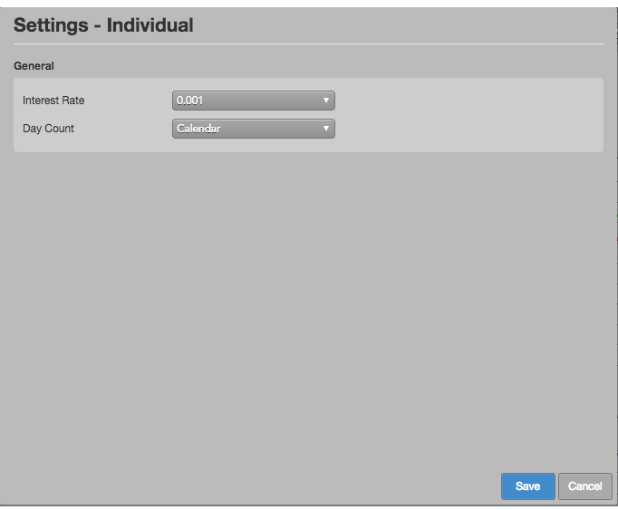

Available settings
These settings affect the current widget, and they become the default settings for all subsequently-opened Vol Curve Manager widgets. Settings can be accessed by clicking the icon.

- Interest rate: Interest rate to use for pricing model calculations.
- Day count: Whether to base calculations on Calender days (365) or Trading days (252) per year. This setting affects the decay of options, especially over weekends (theta).